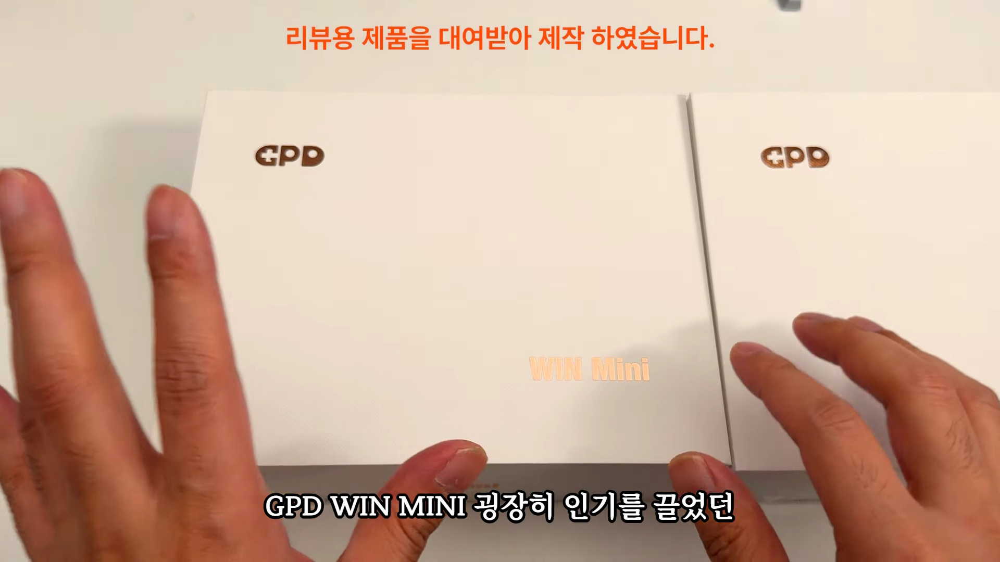
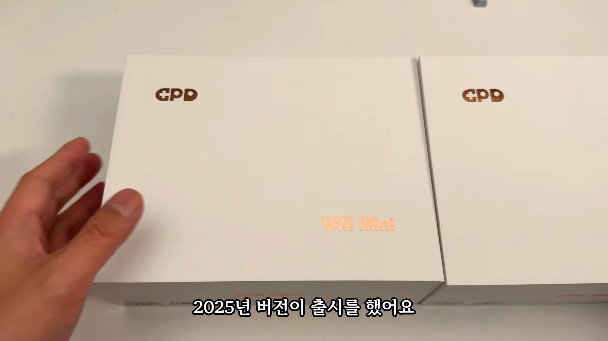
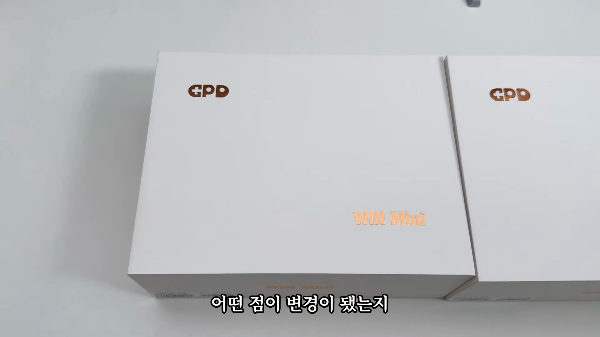
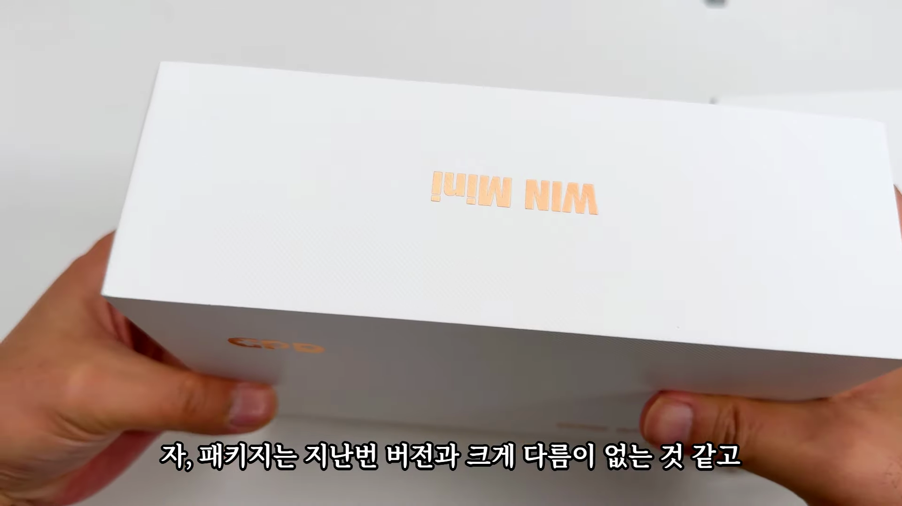
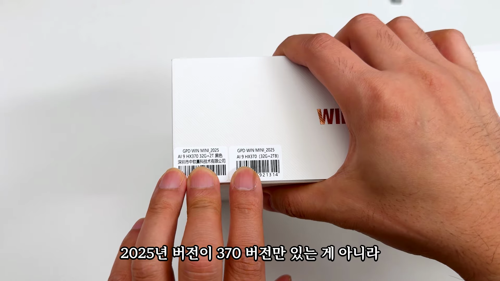
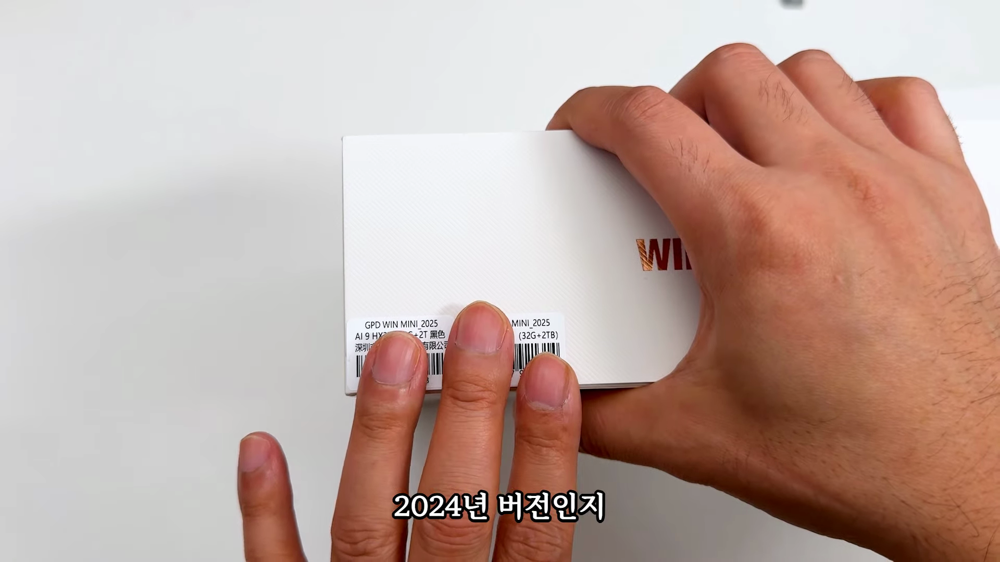
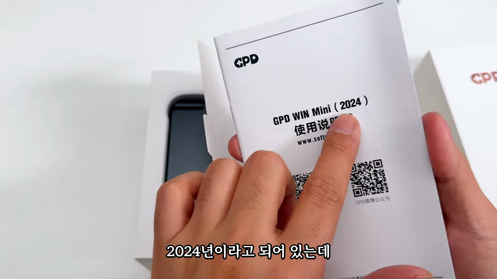
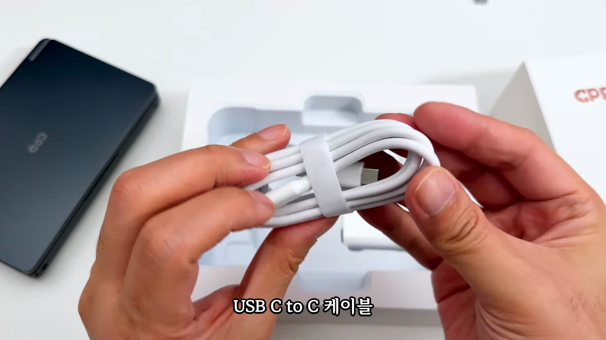

GPD 윈 미니의 2025년 버전이 출시되면서 많은 사용자들의 기대를 모으고 있습니다. 이번 포스트에서는 새롭게 출시된 GPD 윈 미니의 특징과 변화를 살펴보며, 이전 버전과 비교한 주요 업데이트를 정리했습니다. GPD 윈 미니는 그만큼 인기 있는 폼팩터로, 다양한 기능과 성능을 갖춘 미니PC를 찾는 이들에게 매우 매력적입니다. 이제 제품의 각 섹션을 살펴보겠습니다. 
GPD 윈 미니 2025년 버전 출시
- 2025년 버전 출시 소식
- 타우트 코리아를 통해 대열 수령
GPD 윈 미니 2025년 버전을 소개합니다. 이 제품은 기존의 뛰어난 인기와 기능을 이어받아, 새로운 버전으로 출시되었습니다.

변경된 패키지 및 사양
- 패키지는 이전 버전과 비슷함
- AI9, HX370 칩셋 사용
2025년 버전은 고급 AI9, HX370 칩셋을 사용하고 있으며, 패키지 디자인은 이전 모델과 유사하게 유지하고 있습니다.

버전 선택 유의사항
- 880, 6 버전과의 차이점
- 구매 시 주의 필요
880, 6 버전이 별도로 존재하므로, 구매 시 꼭 어떤 버전을 선택해야 할지 유의해야 합니다.

화이트 버전과 블랙 버전 특징 비교
- 화이트 버전 최초 출시
- 상하부 색상 차이
이번 2025년 버전에서는 화이트 버전이 처음으로 출시되었으며, 블랙버전과 비교했을 때 상하부 색상에 차이가 뚜렷하게 나타납니다.

디자인 및 소재
- 메탈 상판과 플라스틱 하판
- 화이트버전의 색상 차이 아쉬움
디자인 면에서 블랙은 메탈과 플라스틱 재질의 조합이 고급스러움을 주지만, 화이트 버전의 색상 차이는 다소 아쉬움을 남깁니다.

사이즈 및 무게 변화
- 무게 증가, 배젤 변화
- 기본 사이즈는 동일
무게가 520g에서 555g으로 증가했으며, 배젤 크기도 변화하여 두꺼워 보이는 경향이 있습니다.

디스플레이 특성
- 7인치, 120Hz 지원
- 1920x1080 해상도
디스플레이는 7인치 크기로 120Hz 주사율을 지원하며, 매우 선명한 1920x1080 해상도를 제공합니다.

내부 사양과 업그레이드
- HX370, RAM 및 SSD 업그레이드
- Wi-Fi 6-2와 블루투스 5.3 지원
내부적으로는 최신 AI9 및 HX370 칩셋이 탑재되어 성능이 이전 모델보다 향상되었습니다.

게임 플레이에 대한 의견
- 시뮬레이션 및 RPG에 적합
- 액션 게임에서는 불편함
- 키보드 사용편리함
GPD 윈 미니는 여러 게임 장르에서 사용 가능하지만, 특히 시뮬레이션이나 RPG에는 적합하며, 액션 게임에서는 약간의 불편함이 있을 수 있습니다.

최종 평가 및 구매 권장
- 881U 버전도 만족할만한 성능
- 화이트 버전의 색상 차이 개선 필요
GPD 윈 미니 2025년 버전은 전체적으로 잘 만들어진 제품이며, 성능과 기능 모두 뛰어납니다. 그러나 화이트 버전의 일부 색상 문제는 개선이 필요합니다.
Tags: #GPD 윈 미니 #2025년 버전 #미니PC #게임 컨트롤러 #디스플레이 #가젯 #기술